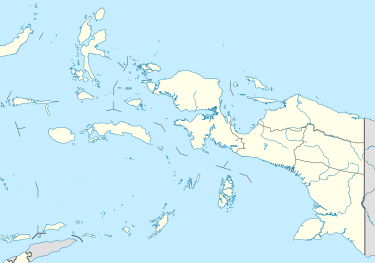
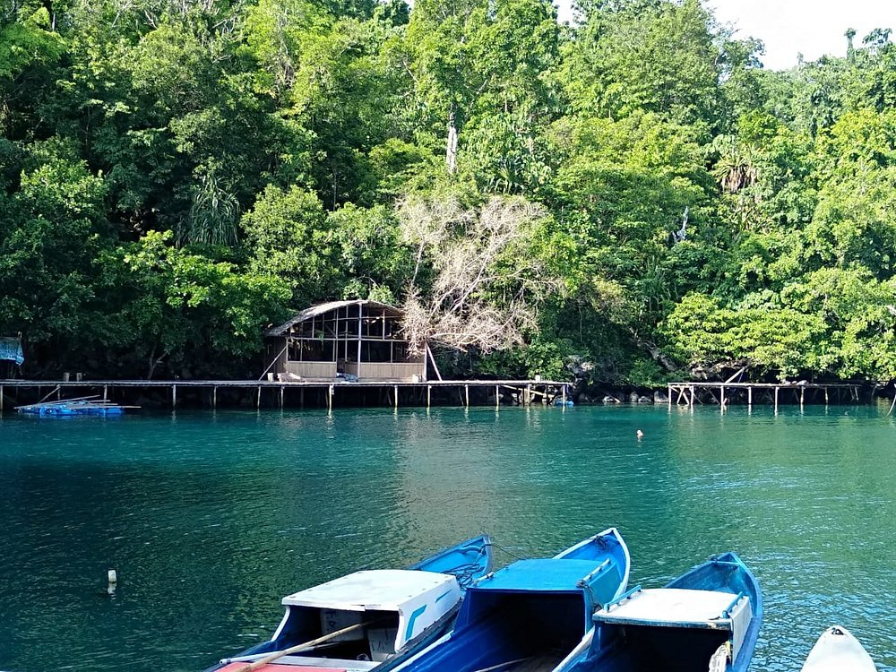
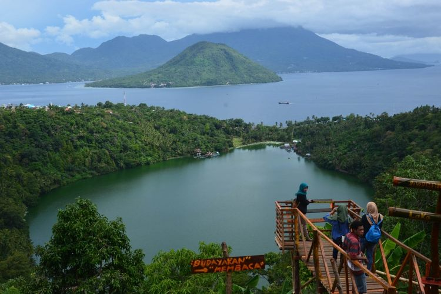

Sejarah

Kerajaan Ternate bermula dari keberadaan empat kampung yang masing-masing dikepalai oleh
seorang kepala marga atau disebut Momole. Empat kampung tersebut kemudian sepakat membentuk
kerajaan, tetapi kala itu raja dan rakyatnya belum diketahui agamanya. Sejak zaman dahulu,
Ternate dikenal sebagai penghasil rempah-rempah, sehingga penduduknya telah berhubungan
dengan para pedagang dari Arab, Melayu, ataupun China. Seiring ramainya aktivitas
perdagangan, ancaman dari para perompak pun semakin meresahkan. Setelah dilakukan
musyawarah, para Momole sepakat menunjuk Momole Ciko sebagai kolano atau raja mereka. Sejak
1257 M, Momole Ciko resmi menjadi raja pertama Kerajaan Ternate dengan gelar Baab Mashur
Malamo. Kerajaan ini terletak di Pulau Ternate, Provinsi Maluku Utara.
Kondisi topografi Kota Ternate dengan sebagian besar daerah bergunung dan berbukit, terdiri
atas pulau vulkanis dan pulau karang dengan kondisi jenis tanah Rogusal ( Pulau Ternate,
Pulau Hiri, dan Pulau Moti) dan Rensika (Pulau Mayau, Pulau Tifure, Pulau Maka, Pulau Mano
dan Pulau Gurida).
Geografis

Kota Ternate terletak antara 3° Lintang Utara dan 3° Lintang Selatan serta 124-129° Bujur
Timur. Wilayah Kota Ternate di sebelah utara, selatan dan barat berbatasan dengan Laut
Maluku, dan di sebelah timur berbatasan dengan Selat Halmahera.[7]
Sebagai kota kepulauan, Kota Ternate terdiri atas 8 (delapan) pulau, yakni: Pulau Ternate
sebagai pulau yang utama, Pulau Hiri, Pulau Moti, Pulau Mayau, dan Pulau Tifure merupakan
lima pulau yang berpenduduk, sedangkan terdapat tiga pulau lain seperti Pulau Maka, Pulau
Mano dan Pulau Gurida merupakan pulau berukuran kecil yang tidak berpenghuni..
Luas wilayah Kota Ternate 5.795, 4 km², terdiri dari luas perairan 5.544,55 km² dan luas
daratan 250,85 km². Secara Administrasi Pemerintahan Kota Ternate terbagi atas 7 (tujuh)
kecamatan dan 77 (tujuh puluh tujuh) kelurahan, masing-masing.
Wisata
Sulamadaha adalah pantai yang paling terkenal di Ternate. Tidak hanya di Indonesia, namun
pantai ini juga sudah diketahui oleh warga mancanegara..
Sulamadaha Beach

Berada di jalur utama Bandung-Lembang, Farm House menjadi objek wisata yang tidak pernah
sepi pengunjung. Selain karena letaknya strategis, kawasan ini juga menghadirkan nuansa
wisata khas Eropa. Semua itu diterapkan dalam bentuk spot swafoto Instagramable.
Ngade Lake or Laguna

wisata ini merupakan kawasan yang bisa anda temukan pada uang pecahan seribuan. Danau ini
memang lokasinya sangat berdekatan dengan laut, namun hal yang unik adalah warna dari
danau ini selalu kehijauan.